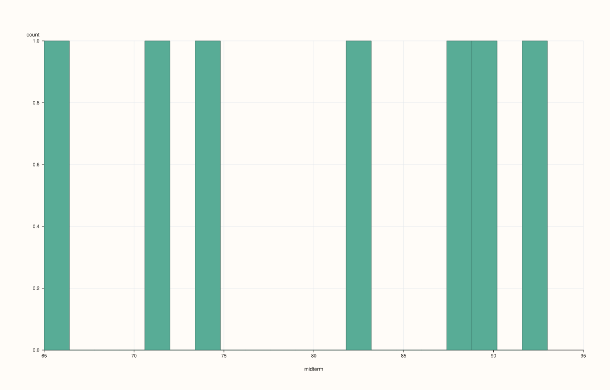
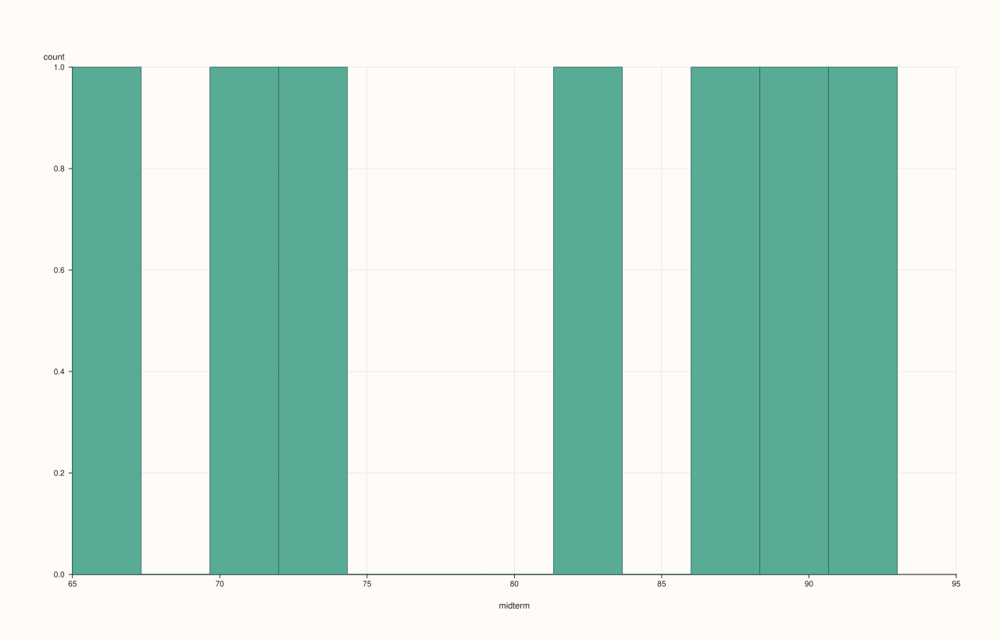
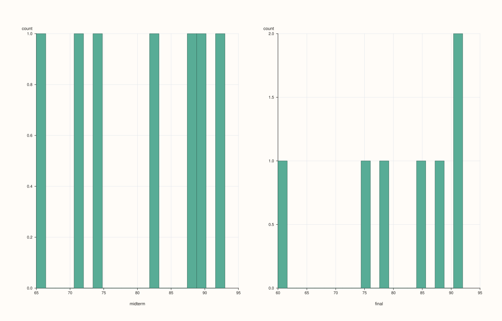
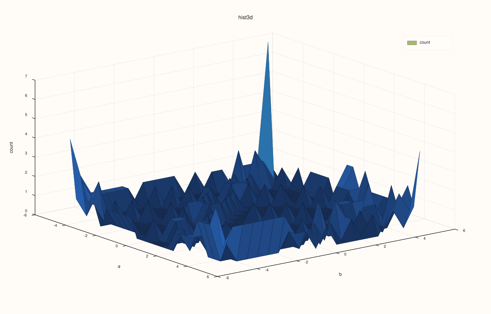
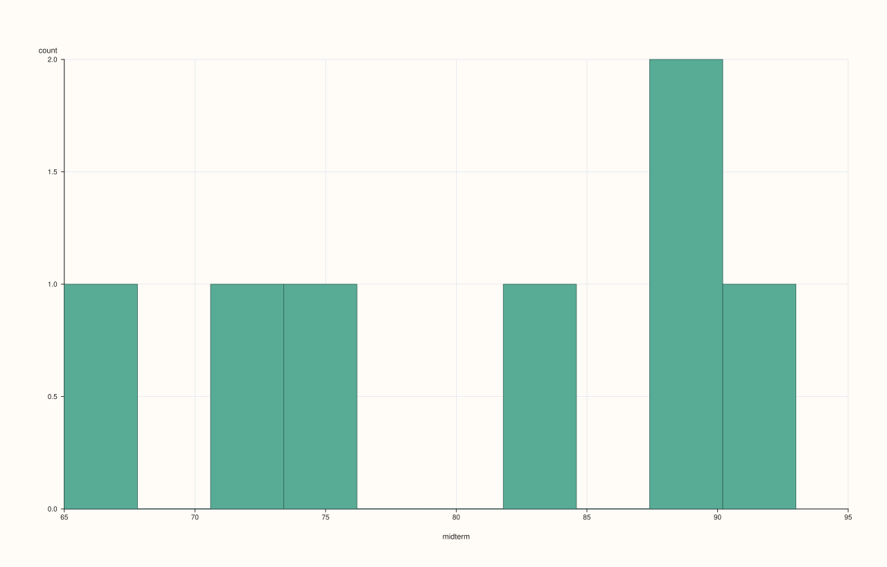
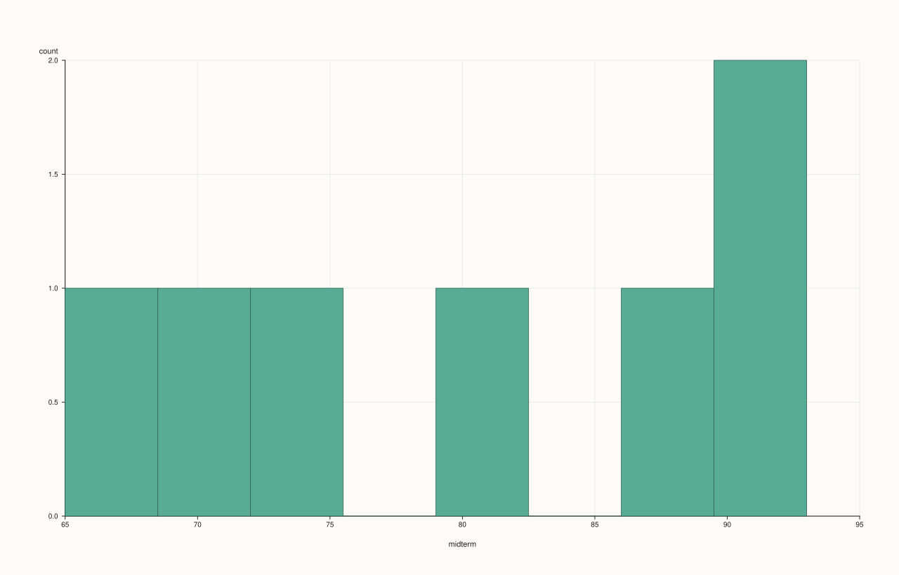

DataFramePlotAccessor::hist¶
Back to DataFramePlotAccessor API Reference
Signatures¶
DataFramePlotAccessor::hist(std::int64_t bins = 20) const -> pluss::pl::Studio
DataFramePlotAccessor::hist(const HistPlotOptions& options) const -> pluss::pl::Studio
DataFramePlotAccessor::hist(std::string_view feature, std::int64_t bins = 20) const -> pluss::pl::Studio
DataFramePlotAccessor::hist(std::string_view feature, const HistPlotOptions& options) const -> pluss::pl::Studio
DataFramePlotAccessor::hist(pluss::msharp::RangeView::Of<std::string_view> features, std::int64_t bins = 20) const -> pluss::pl::Studio
DataFramePlotAccessor::hist(pluss::msharp::RangeView::Of<std::string_view> features, const HistPlotOptions& options) const -> pluss::pl::Studio
DataFramePlotAccessor::hist(std::initializer_list<std::string_view> features, std::int64_t bins = 20) const -> pluss::pl::Studio
DataFramePlotAccessor::hist(std::initializer_list<std::string_view> features, const HistPlotOptions& options) const -> pluss::pl::Studio
What It Does¶
Bins one or more numeric features into frequency-count histograms. With exactly one
feature (named explicitly, or because the frame/selection resolves to just one numeric
feature), the result is a single pane with one histogram. With more than one feature,
hist() doesn’t overlay them on one pane — it lays out a mosaic grid of separate panes,
roughly ceil(sqrt(n)) columns by however many rows that needs, one histogram per feature,
each with its own x/y labels (x_label = feature name, y_label = "count").
Danger
bins == 20 is ambiguous between “explicit” and “still the default”
resolve_bins() treats a bins value of exactly 20 (the literal default written into
every overload’s signature) as “the caller didn’t customize this,” and substitutes
options_.default_bins (from DataFramePlotOptions, itself defaulting to 20) whenever
that default has been changed from its own default. Concretely: if you call
df.plot(options).hist("x") where options.default_bins = 30, you get 30 bins — as
expected. But df.plot(options).hist("x", 20), passing 20 explicitly because you
genuinely want exactly 20 bins, also gets overridden to 30, because resolve_bins() has
no way to distinguish “the caller explicitly asked for 20” from “the caller left it at the
signature’s default of 20.” If you need to force exactly 20 bins on an accessor whose
default_bins has been customized to something else, pass any other value and adjust, or
avoid setting a custom default_bins and pass the bin count explicitly on each call
instead. Any bins value other than exactly 20 (or <= 0, which always falls back to
default_bins) is used exactly as given.
Parameters¶
bins (std::int64_t, default 20)
Requested bin count — subject to the resolve_bins() ambiguity described above. Values
<= 0 always fall back to options_.default_bins (clamped to at least 1).
options (HistPlotOptions)
cpp struct HistPlotOptions { std::int64_t bins{20}; double alpha{0.95}; double line_width{1.0}; };
Same bins ambiguity applies to options.bins as to the plain bins argument.
feature (std::string_view)
A single numeric feature to histogram, drawn on one pane.
features (RangeView<std::string_view> or std::initializer_list<std::string_view>)
Several numeric features. If this resolves to exactly one name (including via the
empty-list “infer everything” rule, on a frame with only one numeric feature), it’s
routed through the single-feature path automatically. Otherwise each feature gets its
own pane in a mosaic grid. Follows the same empty-list-means-“every numeric feature”
rule described on box()’s page.
Returns¶
pluss::pl::Studio
A single-pane figure for one feature, or a mosaic-grid figure (one pane per feature)
for several.
Examples¶
Example 1. A single named feature, default bin count.
using namespace pluss::table;
auto exams = DataFrame({
{"midterm", Slate(pluss::make_series({71.0, 82.0, 93.0, 65.0, 88.0, 74.0, 90.0}))},
{"final", Slate(pluss::make_series({75.0, 85.0, 91.0, 60.0, 92.0, 78.0, 88.0}))},
});
auto chart = exams.plot().hist("midterm");
chart.show();
One pane, one histogram, 20 bins (the literal default, and default_bins was never
customized on this accessor so there’s no ambiguity here).

Example 2. A single feature with an explicit bin count.
auto chart = exams.plot().hist("midterm", 12);
chart.show();

Example 3. Every numeric feature in the frame, no explicit list — since exams has two
numeric features, this produces a mosaic of two panes, not one overlaid pane.
auto chart = exams.plot().hist();
chart.save_pdf("all_hist.pdf");
midterm and final each get their own pane, roughly arranged in a square-ish grid
(ceil(sqrt(2)) = 2 columns here, so a 1-row-by-2-column layout), each labeled with its own
feature name on the x-axis and "count" on the y-axis.

Example 4. An explicit multi-feature list via initializer_list, with a shared bin count
applied to every pane in the mosaic.
auto chart = exams.plot().hist({"midterm", "final"}, 15);

Example 5. The same multi-feature call via a reusable RangeView.
std::vector<std::string_view> names{"midterm", "final"};
auto chart = exams.plot().hist(pluss::msharp::RangeView::Of<std::string_view>(names), 15);
Example 6. An explicit HistPlotOptions, tuning opacity and stroke in addition to bins.
HistPlotOptions hist_options;
hist_options.bins = 10;
hist_options.alpha = 0.8;
hist_options.line_width = 1.4;
auto chart = exams.plot().hist("midterm", hist_options);
chart.show();

Example 7. The bins == 20 ambiguity from the danger box above, made concrete.
DataFramePlotOptions plot_options;
plot_options.default_bins = 8;
auto plot = exams.plot(plot_options);
auto explicit_20 = plot.hist("midterm", 20); // requests 20 explicitly...
auto implicit_20 = plot.hist("midterm"); // ...same as leaving it at the default
Both explicit_20 and implicit_20 actually render with 8 bins, not 20 — because
resolve_bins() cannot tell the two calls apart. Both hit the “still at the signature
default” branch and fall back to plot_options.default_bins.
explicit_20:

implicit_20:

Notes¶
More than one feature produces a mosaic grid of separate panes, not one overlaid pane — contrast
density(), which always overlays multiple features on one pane.bins == 20is ambiguous with “left at the default” wheneverdefault_binshas been customized — see the danger box above.bins <= 0always falls back todefault_bins(clamped to at least1).An empty
featureslist infers every numeric feature, following the same rule asbox().Returns a
pluss::pl::Studio— seeline()’s important callout for how to view or save the result.
See Also¶
DataFramePlotAccessor::density: kernel-density curves instead of binned bars, always overlaid on one pane regardless of feature count.DataFramePlotAccessor::box/violin: other distribution-shape summaries, both single-pane regardless of feature count.